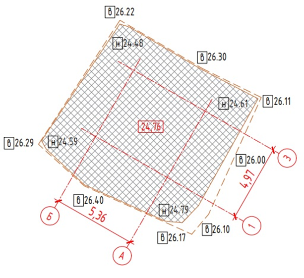

Исполнительная документация на земляные работы

Состав исполнительной документации на производство земляных работ
Начните урок с просмотра видео, в котором продемонстрировали состав исполнительной документации на производство земляных работ с чертежами, схемами и паспортами, а также поделились советами по заполнению актов.
Источник и ограничения: видеоблок платформы не содержит открытого адреса файла.
ИД срезка растительных слоев:
- Запись в Журнале общих работ
- АОСР на срезку растительного слоя
- ИС на срезку растительного слоя
- План земляных масс (в случае выполнения работ по вертикальной планировке)
ИД Разработка котлованов и траншей:
- Запись в Журнале общих работ
- АОСР на разработку грунта
- ИС на разработку грунта
- План земляных масс (при выемке грунта на большой площади или наличии при выемке разных типов грунтов)
- Журнал производства земляных работ (при разработке траншей, задействованных в трубопроводной магистрали, форма 2.4 ВСН 012-88)
- Акт приемки основания котлована (по запросу Заказчика)
ИД Устройство насыпей:
- Запись в Журнале общих работ
- АОСР на срезку растительного слоя
- ИС на устройство насыпи
- Акты лаборатории на послойное уплотнение насыпей
- Журнал входного контроля и паспорта на используемый материал (при устройстве насыпей привозным грунтом)
ИД подготовка основания котлована:
- Запись в Журнале общих работ
- АОСР на укладку геотекстиля или другого материала (при наличии)
- ИС на укладку материала
- Журнал входного контроля и паспорта на используемый материал
ИД Устройство и уплотнение подсыпки:
- Запись в Журнале общих работ
- АОСР на устройство подсыпки (при устройстве подсыпки из нескольких видов, напр. песок, щебень АОСР оформляется на каждый вид отдельно)
- ИС на устройство подсыпки (при устройстве подсыпки из нескольких видов, напр. песок, щебень ИС оформляется на каждый вид отдельно)
- Акты лаборатории на послойное уплотнение насыпей
- Журнал входного контроля и паспорта на используемый материал
ИД на устройство обратной засыпки:
- Запись в Журнале общих работ
- АОСР на устройство обратной засыпки
- ИС на устройство обратной засыпки
- Акты лаборатории на послойное уплотнение засыпки
- Журнал входного контроля и паспорта на используемый материал
Способ расчета объема разработки грунта
Рассмотрим на примере:
S в = 113,71 м2
S н = 105,2 м2
Н ср. верх = 26,18 м
Н ср. низ = 24,62 м

Первый способ:
V = (Sв + Sн) / 2 * h = (113,71 + 105,2) / 2 * (26,18 - 24,62) = 170,75 м3
Второй способ (усеченная пирамида):
V = h / 3 * (Sв + Sн + Sв * Sн) = 170,71 м3
Как видно из примера, разница в объеме незначительная, но при больших объемах разница в результате может достигать 10-15%. Самый точный способ подсчета больших объемов работ – это план земляных масс.
Объемы по устройству насыпей и подсыпок можно рассчитать аналогично.
Объемы по обратной засыпке рассчитываются следующим образом:
V засыпки = V разработки – V подсыпок – V конструкций
То есть из объема разработки необходимо вычесть объемы всех подсыпок и конструкций, находящихся в котловане.
{kind=link}